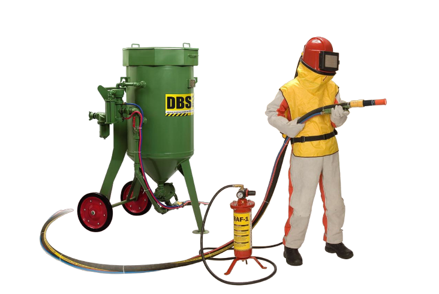

Аренда пескоструйных аппаратов
| Наименование | Период аренды | Стоимость аренды без НДС | Примечания |
|---|---|---|---|
| Пескоструйный аппарат Contracor DBS200 | От 5 рабочих дней | От 70 рублей / сутки | По всей территории РБ |
| Пескоструйный аппарат + компрессор 5.3 м³/мин | От 5 рабочих дней | От 160 рублей / сутки | По всей территории РБ |
| Пескоструйный аппарат + компрессор 10.0 м³/мин | От 5 рабочих дней | От 220 рублей / сутки | По всей территории РБ |
- Возможны скидки при аренде на длительный срок.
- Пескоструйная обработка – это высокоэффективный метод очистки различных поверхностей при помощи песка или иных абразивных средств, которые воздействуют на поверхность под напором сжатого воздуха.
- Область применения пескоструйного оборудования очень обширна, например очистка от ржавщины и подготовка под покраску всевозможных металлоконструкций (автомобили, резервуары, трубопроводы), очистка бетонных и кирпичных сооружений от загрязнений или от последствий пожара, удаление граффити, очистка деревянных конструкций и так далее.
- Аренда пескоструйного оборудования – это выгодное решение для компаний, которые нуждаются в качественной очистке и подготовке поверхностей, ведь стоимость аренды в данном случае несоизмеримо меньше стоимости самого оборудования или стоимости услуг специальных фирм.
- Аренда пескоструйного аппарата возможна как с нашим компрессором, так и без него (если у вас есть свой компрессор).
- Обращаем ваше внимание, что для полноценной и эффективной работы пескоструйного аппарата необходим компрессор с производительностью от 5,0 м³/мин.
- При необходимости организуем доставку пескоструйного оборудования в любой регион.
- Оказываем техническую поддержку.
Телефоны специалистов: 029-372-20-13, 029-188-92-88
На сегодняшний день один из самых эффективных и востребованных методов очистки поверхностей от старой краски,
ржавчины, окалины, других загрязнений, а так же при подготовке к нанесению различных покрытий, декоративное
матирование поверхностей - является способ пескоструйной обработки.
Существует два вида пескоструйной обработки: сухая (холодная) абразивная обработка, второй вид – это
гидроабразивная обработка.
При сухой (холодной) пескоструйной обработке абразивный материал (порошок) распыляется на обрабатываемую
поверхность потоком воздуха под большим давлением. При гидроабразивной обработке абразивный материал (порошок)
распыляется струей воды или иной жидкости.
Пескоструйная установка – это комплекс оборудования, состоящий из воздушного компрессора, пескоструйного
аппарата, двух рукавов (пескоструйный рукав и рукав для подачи воздуха), пескоструйное сопло. Пескоструйные
аппараты различаются по мощности, расходу воздуха, типу используемого материала, объему загружаемого абразивного
материала и другим характеристикам. Изготавливаются пескоструйные аппараты двух видов: открытого и закрытого
вида (пескоструйные камеры). Открытые пескоструйные установки мобильны, применяются при обработке больших
поверхностей (фасады зданий, металлоконструкции, рамы автомобилей, водонапорные башни и др.). Закрытого вида
пескоструйные установки (пескоструйные камеры) применяются при очистке и подготовке к нанесению различных
покрытий небольших изделий, деталей, размеры которых не превышают размеры пескоструйной камеры.
Принцип работы пескоструйного аппарата не замысловат. Воздух, подаваемый от компрессора, под высоким давлением
проходит по рукавам (шлангам, воздухопроводу) через емкость с абразивным материалом, подхватывает его и через
специальную насадку (сопло) направляется на обрабатываемую поверхность.
Разновидность абразивных материалов (абразивных порошков) используемых для пескоструйной обработки очень велика.
Выбор абразивного материала (абразивного порошка) для пескоструйной обработки зависит от многих факторов:
степени загрязнения, структуры материала (металл, камень, стекло) обрабатываемой поверхности, а так же какую
степень очистки необходимо достичь. Самым доступным и распространённым абразивным материалом является кварцевый
песок, но структура гранул кварца очень хрупкая и не позволяет использовать его повторно. Более высокой
абразивной способностью, твердостью и прочностью частиц обладает купершлак и никельшлак, получаемые в результате
переработки шлаков медеплавильного и никелеплавильного производств. Возможно использование пластиковых абразивов
(пластиковая дробь) - это разновидность мягких абразивов для деликатной обработки поверхностей без повреждения
подложки, так же к щадящим абразивным материалам относится стеклянная дробь - это промышленный абразив, широко
использующийся для финишной обработки продукции: матирования, сатинирования, удаления следов механической и
термической обработки. К грубым абразивным материалам, применяемым при пескоструйной обработке, относятся:
гарнет, корунд (оксид алюминия), стальная, чугунная колотая и литая дробь. Эти материалы обладают очень высокой
твердостью (до 40-65 HRC), высокой абразивной способностью, низкой хрупкостью, возможность повторного
использования (рекуперация) до 50 циклов.
Выбор того или иного абразивного материала будет влиять и на производительность выполняемых пескоструйных работ.
Так же на производительность пескоструйной установки влияет мощность выбранного компрессора для подачи воздуха,
диаметр пескоструйного сопла, диаметры рукавов. При подборе мощности воздушного компрессора необходимо
руководствоваться техническими характеристиками используемого пескоструйного аппарата. Так же от мощности
выбранного компрессора будет зависеть и выбор диаметра используемого пескоструйного сопла.
При выборе пескоструйного сопла немаловажным будет и материал, из которого оно изготовлено. Материал для
изготовления пескоструйного сопла выбирается самый высокопрочный — как правило, это карбид вольфрама или карбид
бора. Срок службы пескоструйного сопла из карбида бора или вольфрама составляет не менее 400ч. Самым дешевым
будет сопло, изготовленное из стали, но срок службы такого сопла не более 8ч.
Особое внимание при проведении пескоструйных работ, как и при выполнении любых других работ, необходимо уделить
средствам индивидуальной защиты работника. Костюм и перчатки пескоструйщика должны быть из прочного материала,
что бы защищать от рикошета абразива. Для защиты органов дыхания и зрения от пыли и рикошета абразива необходимо
всегда использовать шлем пескоструйщика. Он должен быть легким, удобным, с обязательной подачей воздуха,
очищенного от влаги, масла и др.частиц специальным фильтром.